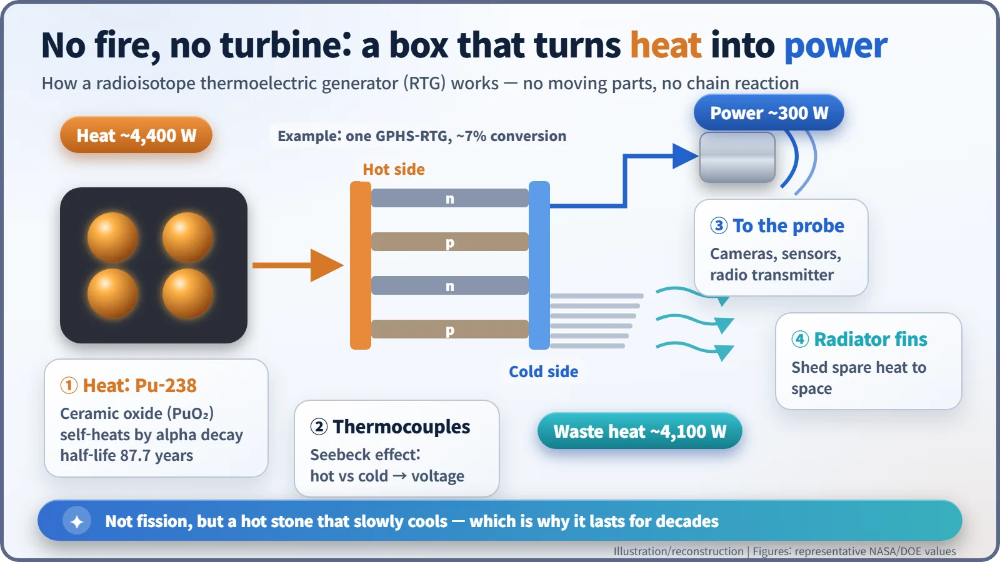
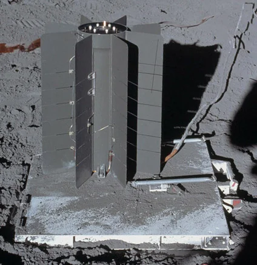
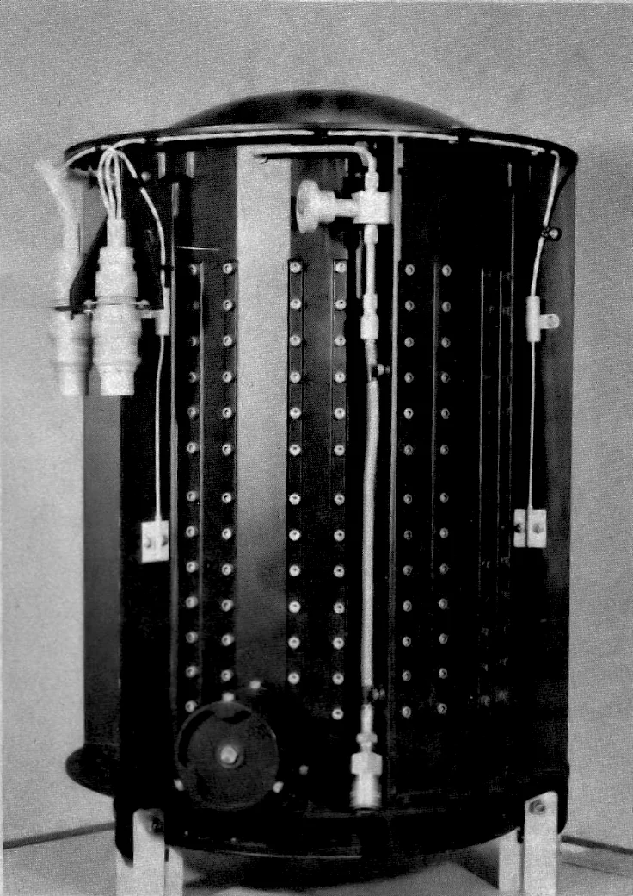
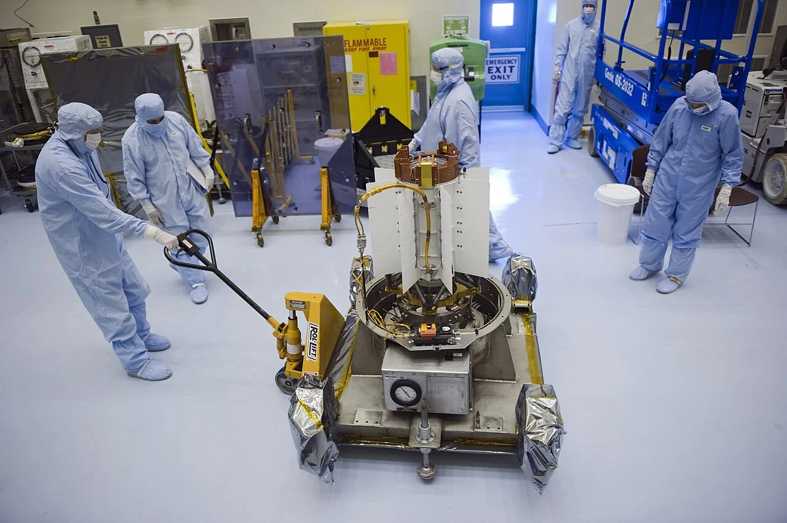
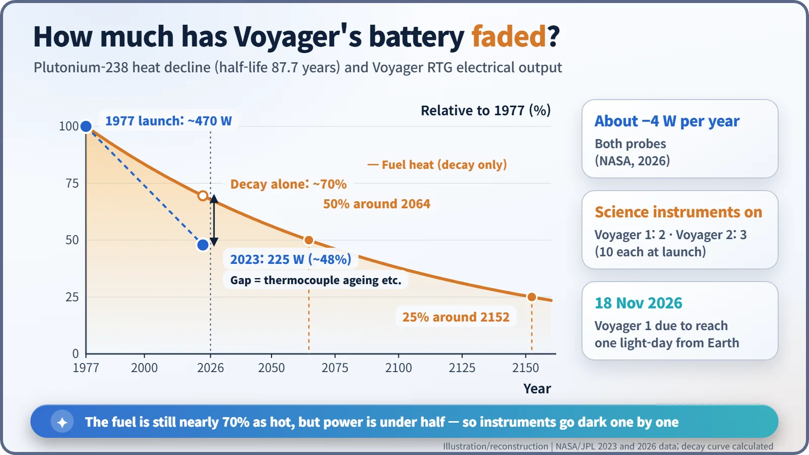

Nuclear History · 175
The Battery That Has Run for Almost Half a Century — Radioisotope Thermoelectric Generators (RTGs) and Deep-Space Exploration
No moving parts and no chain reaction: decay heat from plutonium-238 has kept deep-space probes alive for decades, even as their power slowly fades.
Radioisotope thermoelectric generators (RTGs) turn the decay heat of plutonium-238 directly into electricity, with no moving parts and no chain reaction. Since Transit 4A in 1961 they have powered spacecraft from the Moon to interstellar space, and the two Voyager probes launched in 1977 still run on them in 2026, losing about 4 watts a year.
What if Voyager had carried solar panels?
Sunlight weakens with the square of distance. At Jupiter it is about 1/27 as strong as near Earth, at Saturn about 1/90, at Neptune about 1/900. Where Voyager 1 is now, roughly 24 billion km away, it is about 1/25,000. Yet the two probes launched in 1977 were still sending signals home in autumn 2026. Their secret is three small cylinders hanging off each spacecraft: radioisotope thermoelectric generators, or RTGs. [4]
A power plant with no fire and no turbine
The isotope plutonium-238 decays by emitting alpha particles, and in doing so it gives off heat on its own: roughly half a watt per gram. With a half-life of 87.7 years, it stays warm for decades. An RTG presses that heat against thermocouples. Join two different materials, keep one end hot and the other cold, and a voltage appears; this is the Seebeck effect. With no moving parts, there is almost nothing to wear out. [1]
The key point is that an RTG is not a nuclear reactor. There is no fission and no chain reaction; it simply draws electricity from a "hot stone that slowly cools down". That makes it a different path from SNAP-10A, the reactor America flew in orbit in 1965, or NERVA, the reactor-heated rocket engine. The price is low efficiency: the GPHS-RTG used on Cassini and other missions turns about 4,400 W of heat into about 300 W of electricity and radiates the rest into space. [2]

29 June 1961: 2.7 watts
The first RTG in space flew on a US Navy navigation satellite. Transit 4A, launched on 29 June 1961, carried SNAP-3B, built for the Atomic Energy Commission (AEC). It produced just 2.7 W, but it was the first device to make electricity from nuclear energy in space. [1]
On 21 April 1964 the Transit 5BN-3 satellite failed to reach orbit and fell back. Its SNAP-9A generator, as designed at the time, burned up high in the atmosphere, releasing about 1 kg of plutonium-238 (about 17,000 curies), mostly over the Southern Hemisphere. The United States then reversed its approach: fuel was made into ceramic and encased so it would survive re-entry intact. When the Nimbus B-1 weather satellite failed at launch in 1968, its fuel was recovered from the seabed a few months later. [6]
From the Moon to the edge of the Solar System
In November 1969 the Apollo 12 crew set up a science station (ALSEP) on the lunar surface and connected a 70 W SNAP-27 RTG. The lunar stations, continued through Apollo 17, sent data until 1977. When Apollo 13 abandoned its landing, its RTG fuel cask was aimed to fall into the Tonga Trench, 6–9 km deep; no release of radioactivity was reported to have been detected. [1] [2] [6]

The destinations grew more distant. Pioneer 10 and 11 explored Jupiter and Saturn, and the Viking landers worked on the surface of Mars, all on RTG power. Voyager 2 left on 20 August 1977 and Voyager 1 on 5 September, each with three MHW-RTGs. Each unit started at 158 W, about 470 W per spacecraft. [2] [3]

There was controversy too. Before the Saturn probe Cassini launched with three RTGs on 15 October 1997, some citizen groups demanded the launch be halted, citing the risk that plutonium could be dispersed in an accident. NASA's environmental impact assessment judged that risk to be very low, and the launch went ahead. New Horizons (2006) later flew past Pluto, and the Mars rovers Curiosity and Perseverance still drive on with MMRTGs of about 110 W. [6]

When the fuel store ran low
Plutonium-238 has to be made in a reactor by irradiating neptunium-237 with neutrons. US bulk production stopped in 1988, when the Savannah River reactors closed, and in the 1990s the country bought material from Russia. In December 2015 Oak Ridge National Laboratory announced it had produced 50 g in its High Flux Isotope Reactor (HFIR), the first US production in about 30 years. The goal is an average of 1.5 kg a year. [5]
Voyager's power budget, autumn 2026
According to NASA, both Voyagers lose about 4 W of power every year. In 2023 their RTGs delivered 225 W, under half the launch figure. Yet the fuel itself still gives off nearly 70% of its original heat; the gap is mostly the ageing of the thermocouples. So the team has been switching instruments off one by one. In February and March 2025 they turned off Voyager 1's cosmic ray subsystem and Voyager 2's low-energy charged particle instrument, and on 17 April 2026 they switched off Voyager 1's low-energy charged particle instrument as well. As of late October 2026, of the ten science instruments each probe carried at launch, two are still on aboard Voyager 1 and three aboard Voyager 2. On 18 November 2026, Voyager 1 is due to reach one light-day from Earth. [3] [4]

From submarines and icebreakers to deep space, the story of compact nuclear power closes this chapter here. Humanity's most distant eyes are still kept awake by the lukewarm heat of decaying plutonium.